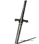
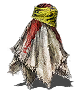
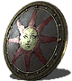
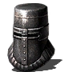
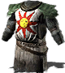
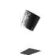
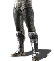

Equipment
Sunlight Straight Sword
In-Game Description:
This standard longsword, belonging to Solaire of Astora, is of high quality, is well-forged, and has been kept in good repair. Easy to use and dependable, but unlikely to live up to its grandiose name.
Sunlight Talisman
In-Game Description:
This standard longsword, belonging to Solaire of Astora, is of high quality, is well-forged, and has been kept in good repair. Easy to use and dependable, but unlikely to live up to its grandiose name.
Sunlight Shield
In-Game Description:
Shield of Solaire of Astora, Knight of Sunlight. Decorated with a holy symbol, but Solaire illustrated it himself, and it has no divine powers of its own. As it turns out, Solaire's incredible prowess is a product of his own training, and nothing else.
Iron Helm
In-Game Description:
Helm of Solaire of Astora, Knight of Sunlight. Of high quality, but lacking any particular powers. Solaire's incredible prowess must have come from rigorous training alone, for his equipment exhibits no special traits.
Armor of the Sun
In-Game Description:
Armor of Solaire of Astora, Knight of Sunlight. The large holy symbol of the Sun, while powerless, was painted by Solaire himself. Solaire's incredible prowess must have come from rigorous training alone, for his equipment exhibits no special traits.
Iron Bracelet
In-Game Description:
Bracelets of Solaire of Astora, Knight of Sunlight. Of high quality, but lacking any particular powers. Solaire's incredible prowess must have come from rigorous training alone, for his equipment exhibits no special traits.
Iron Leggings
In-Game Description:
Leggings of Solaire of Astora, Knight of Sunlight. Of high quality, but lacking any particular powers. Solaire's incredible prowess must have come from rigorous training alone, for his equipment exhibits no special traits.